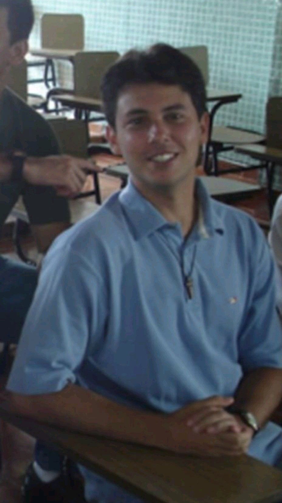
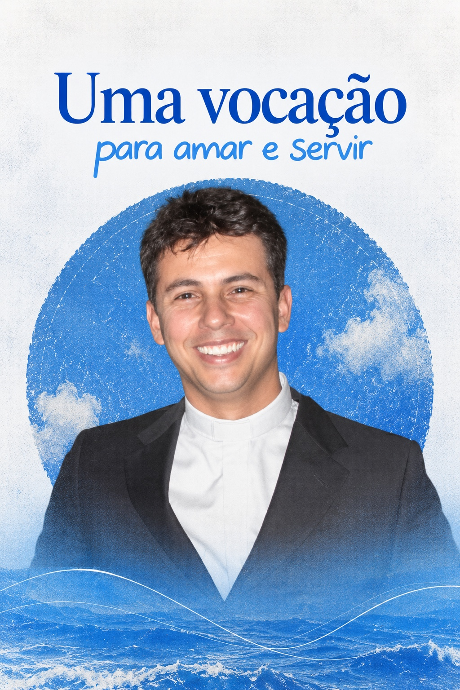
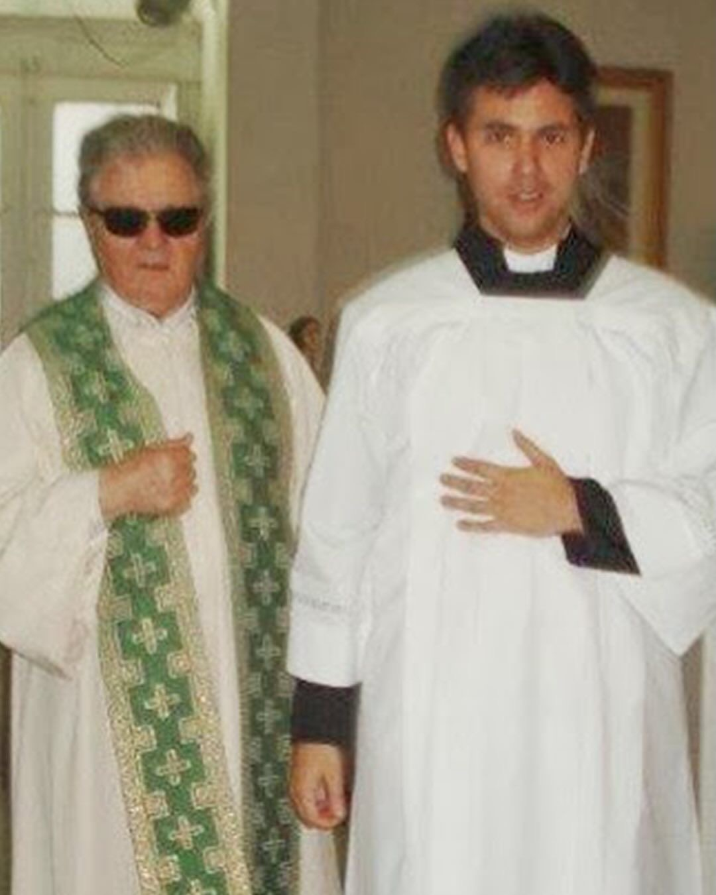
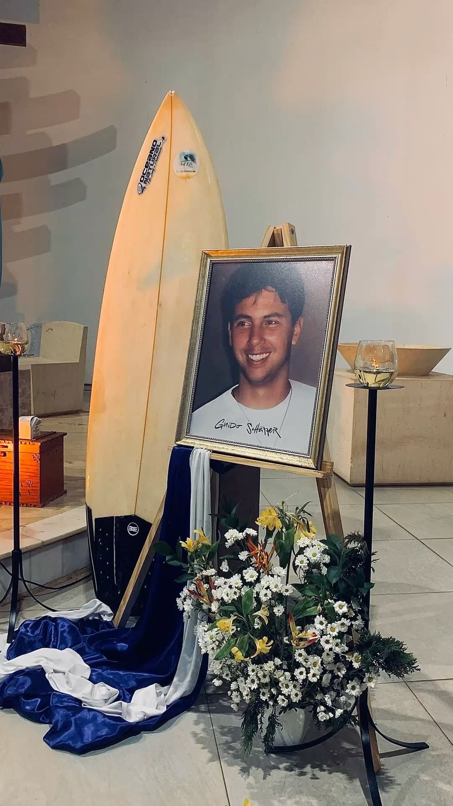

VENERÁVEL GUIDO SCHÄFFER
Uma vida entregue a Cristo.
Médico, surfista, amigo dos pobres e seminarista. Uma trajetória marcada por fé, serviço e discernimento.
Começar a história1974 — 2009
Uma vida breve em anos, profunda em entrega.
Da juventude no Rio de Janeiro à medicina, do serviço aos mais vulneráveis ao seminário, cada etapa ajuda a compreender o testemunho que a Igreja reconheceu como vida de virtudes heroicas.

O INÍCIO DE UMA HISTÓRIA
Um jovem como tantos outros.
Guido Vidal França Schäffer nasceu em 22 de maio de 1974, em Volta Redonda, no estado do Rio de Janeiro. Cresceu em uma família católica e mudou-se ainda jovem com a família para a cidade do Rio de Janeiro.
Esporte, amizades e vida cotidiana fizeram parte de sua juventude. O surfe tornou-se uma de suas grandes paixões e o mar permaneceu ligado à sua história.
Ao mesmo tempo, a fé recebida em família foi amadurecendo e ocupando um lugar cada vez mais concreto em suas escolhas.

A VOCAÇÃO PARA CUIDAR
A medicina como serviço ao próximo.
Guido formou-se em Medicina e atuou na Santa Casa de Misericórdia do Rio de Janeiro. O cuidado dos enfermos tornou-se uma expressão concreta de sua vocação de serviço.
Seu olhar não se limitava à doença. Procurava acolher a pessoa, sua fragilidade e suas necessidades, aproximando fé e prática médica.
Esse caminho o levou também ao encontro de pessoas que viviam situações de grande vulnerabilidade.
Aprofundar: Guido médico
UM MÉDICO DOS MAIS POBRES
Cuidar das feridas do corpo e da alma.
Guido dedicou atenção aos pobres, aos marginalizados e a pacientes com HIV/Aids. Colaborou no cuidado aos mais necessitados junto às Missionárias da Caridade, congregação fundada por Santa Teresa de Calcutá.
Serviço médico e evangelização caminhavam juntos. Para ele, aproximar-se de quem sofria era também uma forma concreta de viver o Evangelho.

UMA FÉ QUE SE TORNAVA VIDA
O encontro com Cristo transformou tudo.
A oração, a Palavra de Deus e a Eucaristia tornaram-se centrais em sua vida. Guido também se dedicou com entusiasmo à evangelização, especialmente entre os jovens.
Quem o conheceu recordou sua amizade profunda com Jesus, sua familiaridade com a Bíblia e a naturalidade com que falava de Deus nos ambientes que frequentava.

O CHAMADO AO SACERDÓCIO
Quando Deus pediu algo a mais.
Depois de anos de vida cristã, serviço e discernimento, Guido decidiu entrar no seminário e preparar-se para o sacerdócio.
A experiência como médico, a proximidade com os pobres, o amor pela Eucaristia e a evangelização não ficaram para trás: tornaram-se parte da história que oferecia a Deus.
No seminário, continuou a formação, os estudos, a oração e o serviço, procurando responder com generosidade ao chamado que reconhecia.

O ENCONTRO DEFINITIVO
Uma vida breve, mas inteiramente doada.
Em 1º de maio de 2009, aos 34 anos, Guido morreu em um acidente enquanto surfava na praia do Recreio dos Bandeirantes, no Rio de Janeiro.
Sua morte causou profunda comoção entre familiares, amigos, companheiros de formação, pacientes e pessoas alcançadas por seu testemunho.
Depois de sua partida, a fama de santidade continuou a crescer e sua história passou a alcançar pessoas que nunca o haviam conhecido pessoalmente.

UM CAMINHO DE SANTIDADE
Uma história que continua.
A investigação diocesana de sua causa começou em 17 de janeiro de 2015 e foi concluída em 8 de outubro de 2017. O Dicastério das Causas dos Santos reconheceu sua validade jurídica em 11 de maio de 2018.
Após o estudo da causa, em 20 de maio de 2023 o Papa Francisco autorizou o decreto que reconheceu as virtudes heroicas de Guido. Desde então, a Igreja o apresenta com o título de Venerável Guido Schäffer.
Seu testemunho permanece especialmente próximo dos jovens: fé, profissão, amizade, esporte e vocação não precisam ser mundos separados quando Cristo ocupa o centro da vida.
VENERÁVEL GUIDO SCHÄFFER
Uma vida que continua a apontar para Cristo.
Médico • Surfista • Seminarista
Voltar ao início